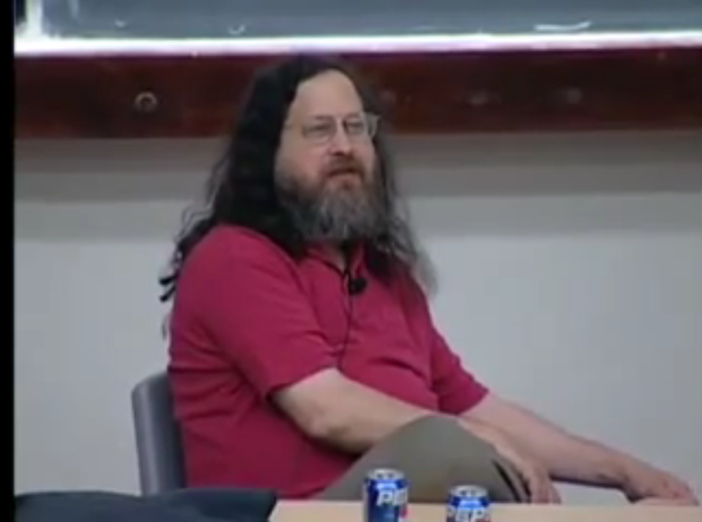

A Brief Intro
to
FOSS & Linux & SJTUG
Presented by
htfy96
## FOSS = Free and Open-Source Software 自由软件 vs 开源软件
### 开源产品 -  <!-- .element style="vertical-align:middle; display: inline-block; margin: 0 auto; max-height: 1em; border: none" --> Firefox -  <!-- .element style="vertical-align:middle; display: inline-block; margin: 0 auto; max-height: 1em; border: none" --> Android -  <!-- .element style="vertical-align:middle; display: inline-block; margin: 0 auto; max-height: 1em; border: none" --> FFMpeg
#### 大型机的用户组  <!-- .element: class="stretch" style="max-height:300px" --> - IBM 701, DEC等大型机的用户组：SHARE, DECUS - 内部交换软件 - 源代码发布
#### 开源标准 > ``` > Network Working Group Steve Crocker > Request for Comments: 1 UCLA > 7 April 1969 > Title: Host Software > Author: Steve Crocker > Installation: UCLA > Date: 7 April 1969 > ``` - ARPANET: Request for Comments(RFC) - 能被自由接受、使用与扩展
#### UNIX/C/BSD - 1969年开始开发*UNIX*操作系统 - 1971年：C语言 - 1973：用C重写*UNIX* - 1969~1979: *UNIX* v1~v7：公开研究 - [模拟器](./media/pdp_emulator/pdp_emulator.html) - 1979：Berkeley在*UNIX* v6基础上添加了vi编辑器和Pascal编译器，发行了 The Second Berkeley Software Distribution(*2BSD*)
### 80年代初 - 开源软件遭遇挫折 - 软件越来越复杂，使用者越来越多 - 开始出现单独的“软件开发商” - Hacker社群瓦解，闭源成为主流
#### Microsoft创立 - 1975年，Bill Gates写出了 Altair BASIC 解释器，并以专有许可证对外出售。 - 同年4月4日，微软创立  <!-- .element class="stretch" style="max-height: 250px" --> - 微软Basic解释器通过盗版日益流行
#### 公开信事件 - 1976年2月3日，Gates撰写了一封公开信抨击未付费使用Altair BASIC的行为 > Open Letter to Hobbyists, Gates, 1976 > > ……你们必须注意到，你们中大多数人的软件是偷来的。……这公平吗？…… > 有谁会在没有任何报酬的情况下来做这些专业的工作？ > 什么样的爱好者可以为他的产品投入三人年（man-year）的开发时间， > 并且发现所有的错误、编写文档以及免费发布这个产品？ <!-- .element style="font-size: xx-large" -->
#### 公开信事件 - 反应 - 越来越多的软件公司成立、核算成本并开始收费 - 业余爱好者(hobbist)和商业公司公司划清界限 - 社区反应： - 虚假宣传（硬件395刀, 操作系统/BASIC等软件1000刀) - Gates在政府赞助的电脑上开发
#### IBM不再公开软件源代码(1983) > 今天我们宣布…… > 对于目前以二进制文件散发的部分程序，源文件将不再公开。 > 同时，对于已有的程序： > - 禁止反向工程 > - 禁止私自再分发修改后的程序
### UNIX的商业化 - UNIX = 通用操作系统 - 硬件制造商提供专有、闭源的Unix改版 - 微软基于Unix发行了专有的Xenix 
### UNIX的商业化(2) - 第一批用UNIX的学生毕业进入了公司 - UNIX v8~v10只向一些大学公开，之后开发终止 - 1982, AT&T发布商业版UNIX System Ⅲ，不再包含源代码
## 自由软件运动 & GNU/Linux > ### Free Unix! > <!-- .element class="tty-font" --> > Starting this Thanksgiving I am going to write a complete Unix-compatible software > system called GNU (for Gnu's Not Unix), and give it away free(1) to everyone who can use it. > <!-- .element class="tty-font" --> > \- RMS, 1983
Richard M. Stallman

### RMS眼中的1983年 [OldUseNet](./media/rms_saw/rms_saw.htm) - 各种各样的操作系统、软件层出不穷 - 大多需要收费、且闭源
### GNU项目(1983/09/27) - FREE UNIX! - GNU = GNU is Not Unix - 兼容Unix的软件系统 - 编辑器/Shell/C 编译器/系统内核/连接器/表格软件/... > - free to everyone who can use it <!-- .element class="tty-font" --> > - if I like a program, I must share it with other people who like it <!-- .element class="tty-font" -->
### GNU项目 - 自由软件 - 自由软件(Free software) - Free $=$ Libre $\neq$ Unpaid - 允许： 1. 以任何目的运行软件 2. 自由研究与修改软件 3. 自由分发软件 4. 自由增强并散发增强版本
### GNU项目 - GPL协议  <!-- .element class="stretch" style="max-height: 200px; background-color: white;" --> - GPL = GNU General Public License - Copyleft/传染性 - 使用GPL协议发布的软件必须许可公众自由运行、复制、传播、修改与再分发，唯需： - 修改与再分发的版本必须也按照GPL流通
### GNU项目(2)  <!-- .element class="stretch" style="max-height: 300px" --> - 到了1989年，项目除内核外已经基本完工 - GCC、GDB、Emacs都已经成为了市场领导者 - Free Software Foundation(FSF)
### Linux  <!-- .element class="stretch" style="height: 180px; background-color: white;" -->  <!-- .element class="stretch" style="height: 180px; background-color: white;" --> > Hello everybody out there using minix, > I'm doing a (free) operating system > (just a hobby, won't be big and > professional like gnu) > for 386(486) AT clones. <!-- .element class="tty-font" --> >
### GNU/Linux - Linux采用了GPLv2许可证 - Linux内核$+$GNU的软件 $=$ 操作系统！
### Debian发行版 - 把Linux内核和软件包打包到一起 $\rightarrow$ 发行版 - 1993, Debian:  <!-- .element class="stretch" style="height: 150px; background-color: white;" -->  <!-- .element class="stretch" style="height: 150px; background-color: white;" --> > i’m committing suicide tonight.. do not intervene as i have many stories to tell and do not want them to die with me > — Ian Murdock (@imurdock) 12/28, 2015
## 90年代～：当代开源 - 开源软件成为商业模式 - 自由软件面临困境
### 开源$\neq$自由 - 开源：开放源代码 - 自由软件：自由使用、研究、修改、再分发，尊重用户自由
### Linux内核2016贡献者公司名单 ``` Company Percent of total Intel 12.9% Red Hat 8.0% None 7.7% Unknown 6.8% Linaro 4.0% Samsung 3.9% SUSE 3.2% IBM 2.7% Consultants 2.6% ``` 前10名贡献了超过57%的代码
### 当前开源局面  <!-- .element style="max-height: 550px" -->
开源社区生存指南
### RTFM Read The F*cking Manual! - 少问读手册就能解决的问题 open(2) = section 2, article named *open* ``` man 2 open ```
### 如何解决问题 - Google it! - 在https://superuser.com/ https://askubuntu.com/ https://stackoverflow.com 上问 - 加入project-users邮件列表，在里面提问 - 开Github issue - 直接向开发者发邮件
### 常见的沟通方式 - 论坛 - gitter - 邮件列表 - IRC
### 如何学习 （个人观点） - 先泛泛看些大概 - 推荐《Linux 口袋书》（第二版） - (踩坑 -> 查资料 -> 填坑) $\times \infty$ - 视频✗：效率太低 - 群里问✗：大概率不会有人解答入门问题 - 早期不要陷入如何装系统的泥潭……虚拟机/VPS - 装最新版的Debian/Fedora/Ubuntu...✓ / 装CentOS6/RedHat ✗
## SJTUG SJTUG = SJTU Joyful Techie User Group - 同好会 ✓ - 社团 ✗ 最Techie的组织！
### 现在的项目 - [SJTUThesis](https://github.com/sjtug/SJTUThesis) 毕业论文的$\LaTeX$模板 - http://sjtug.org - 软件源mirrors.sjtug.org的相关项目 - lug: 软件源后端引擎 - sjtug-mirror-frontend: 软件源前端 - mirrors-docker: 支持软件源的配置文件 - kxsw: 科学上网
### 活动 - 定期分享 （任何人都可以来讲） - 吃锅 - 一起来写代码 - （可能会有的）Code Review
Free share, join us!